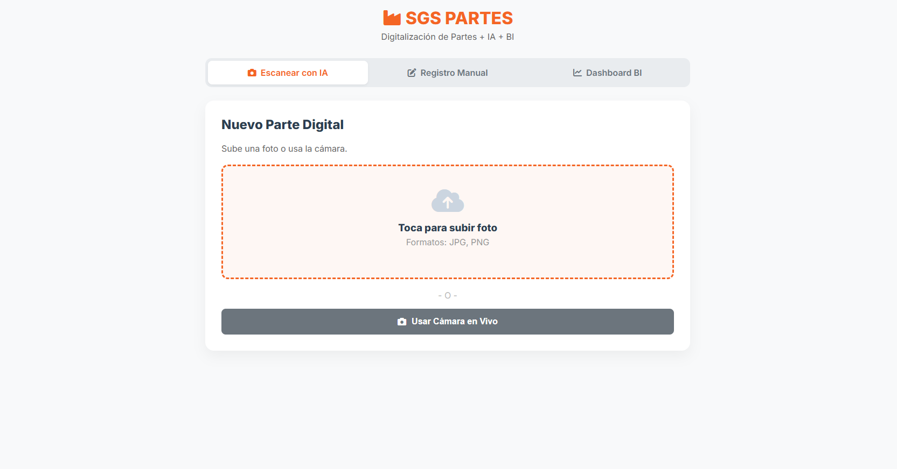
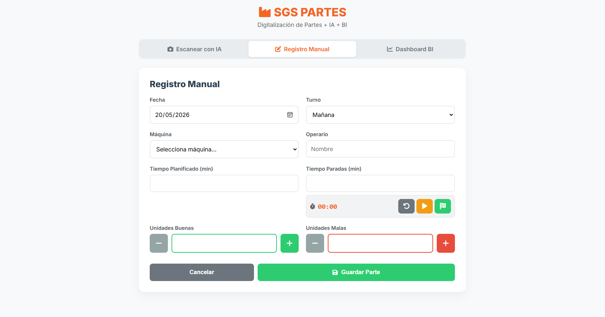
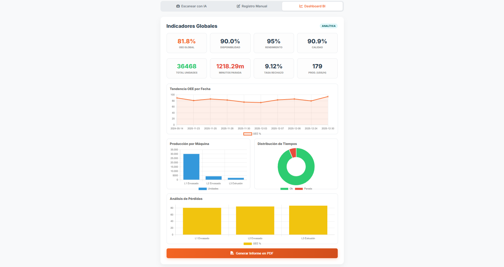

SGS Partes
Plataforma digital para el registro y análisis de partes de producción mediante IA, formularios inteligentes y dashboards en tiempo real. SGS Partes permite centralizar la información de planta, reducir errores manuales y mejorar la trazabilidad operativa.
Funcionalidades Clave

Escaner para crear partes digitales
Digitaliza partes físicos de producción mediante fotografías o captura en vivo desde cámara. El sistema permite subir imágenes de documentos para convertirlos rápidamente en registros digitales organizados y accesibles desde cualquier dispositivo.
- Subida de imágenes desde móvil o PC
- Captura directa mediante cámara integrada
- Procesamiento automático para digitalización de partes
- Interfaz rápida y sencilla para operarios

Registro manual
Registro manual optimizado para introducir datos de producción, tiempos de parada, unidades buenas y defectuosas. Incluye control de turnos, máquinas y operarios en una única interfaz clara y preparada para uso industrial.
- Control de producción por máquina y turno
- Temporizador integrado para tiempos de parada
- Registro de unidades buenas y rechazadas
- Guardado rápido de partes de producción

Dashboard BI
Visualización de métricas industriales mediante paneles BI interactivos. El dashboard permite analizar OEE, disponibilidad, rendimiento, calidad y producción por línea para facilitar la toma de decisiones en planta.
- Indicadores globales de producción en tiempo real
- Gráficas de tendencias y análisis de pérdidas
- Distribución de tiempos productivos y paradas
- Generación automática de informes en PDF